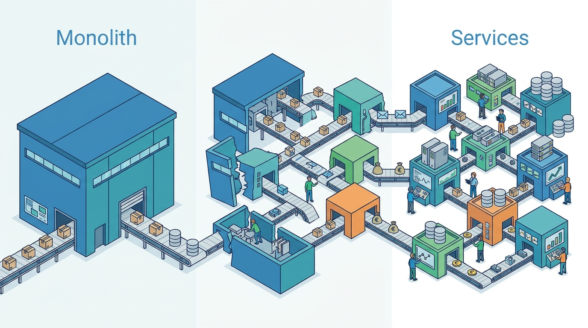

Part XI — PRACTICE: How Others Built It
Case: Amazon, From Monolith to Services to the Everything Store
AI-assisted: researched and written with Claude Code and Codex; illustrations generated with Gemini and OpenAI image tools. How this works
